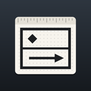
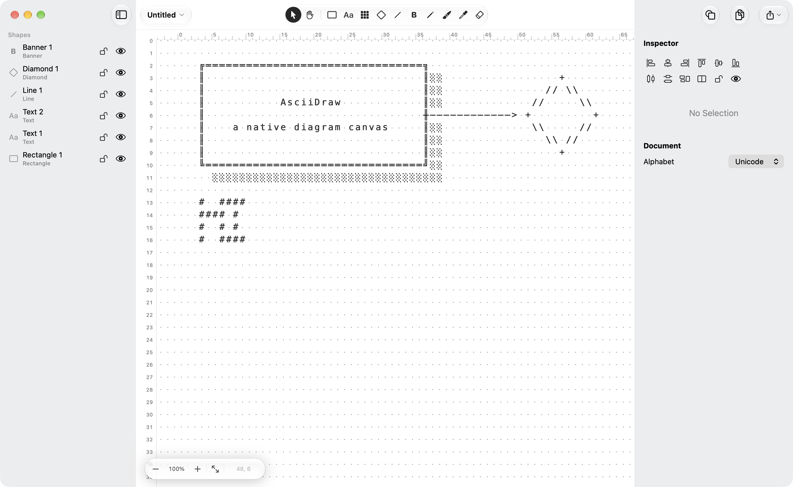
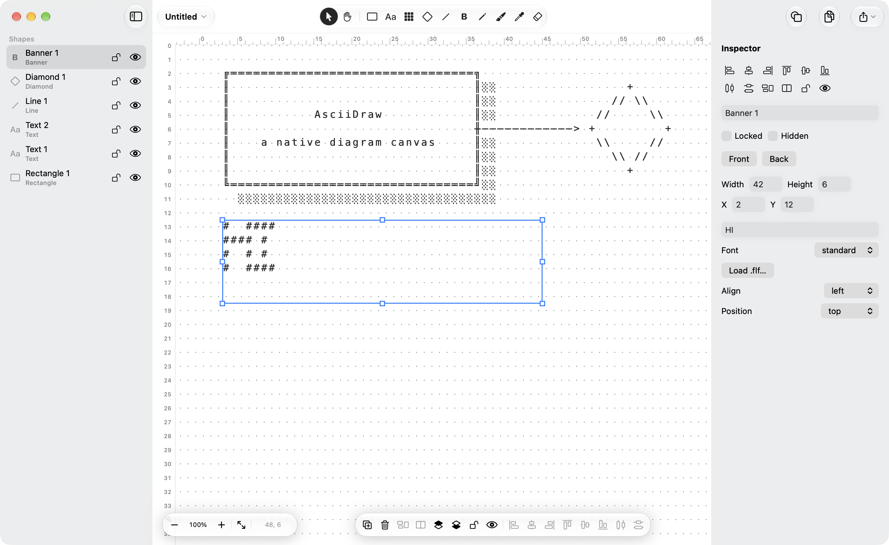
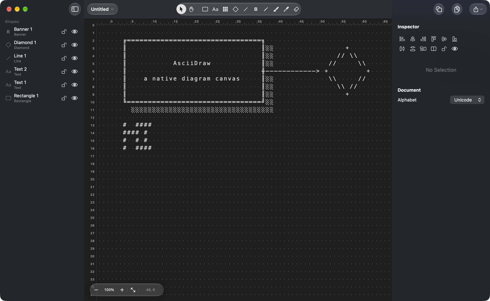

One grid
Rectangles, text, lines, diamonds, and banners render into the same character cells. Rulers are numbered. Zoom stays on the cells.

AsciiDrawmacOS 26 · Apple silicon · free
Boxes, lines, diamonds, and FIGlet banners live on a character grid. The picture is text, so it drops into a README, a source comment, or a terminal.
The build is ad-hoc signed, not notarized. The first open is a right-click, then Open. Install notes.

Rectangles, text, lines, diamonds, and banners render into the same character cells. Rulers are numbered. Zoom stays on the cells.
Copy the picture, or export plain text, a shell, Ruby, or Python comment, plus PNG, SVG, and JSON.
Claude and other MCP clients can read and edit the open document while AsciiDraw is running.
Canvas
Unmodified letters pick a tool. Space pans, then puts the previous tool back. Drag a line endpoint onto a box to attach it. Option-click a border to leave a point a line can stick to.

Type and lines
Rectangles take a single or double border, a fill, and a shadow. Lines can run orthogonal or as a staircase, dashed, and end in an arrow or one of three Crow’s foot caps. Drag an endpoint onto a rectangle to attach the line.
Banners use the bundled FIGlet fonts block, slim, and standard. Load any other .flf from the inspector. The document alphabet is Unicode or ASCII. The Shape menu groups, locks, aligns, and distributes a selection.
Appearance
View → Appearance sets the window. The canvas, rulers, sidebar, and inspector use the same choice. System tracks the Mac’s appearance.

Leave the editor
Documents are JSON with the extension .asciidraw. The Export menu writes plain text, a shell comment, a Ruby comment, a Python comment, PNG, SVG, or JSON. Copy as Text puts the grid on the pasteboard.
The download includes the asciidraw command. It prints a saved document, or writes the JSON back out.
asciidraw Diagram.asciidraw
asciidraw --json Diagram.asciidrawMCP
AsciiDraw listens on a local socket while it is running. asciidraw-mcp is a stdio MCP server inside the app bundle. It forwards one tool call at a time.
{
"mcpServers": {
"asciidraw": {
"command": "/Applications/AsciiDraw.app/Contents/MacOS/asciidraw-mcp"
}
}
}read_canvas and list_shapesadd_shape, set_text, set_framedelete_shapes, select_shapes, set_zoomInstall
GitHub Actions builds AsciiDraw on every push to main, on a macos-26 Apple silicon runner, and publishes AsciiDraw.zip on the latest release.
AsciiDraw.app, the asciidraw command, and a short readme.AsciiDraw.app to Applications. Put asciidraw on your PATH if you want the command.If macOS says the app is damaged, the download was quarantined. In Terminal: xattr -dr com.apple.quarantine /Applications/AsciiDraw.app
Requires macOS 26 or later. The published build is Apple silicon. To build both the app and the command yourself: swift test, then scripts/build-app.sh.
.flf./tmp that belongs to your user. Nothing listens on the network.